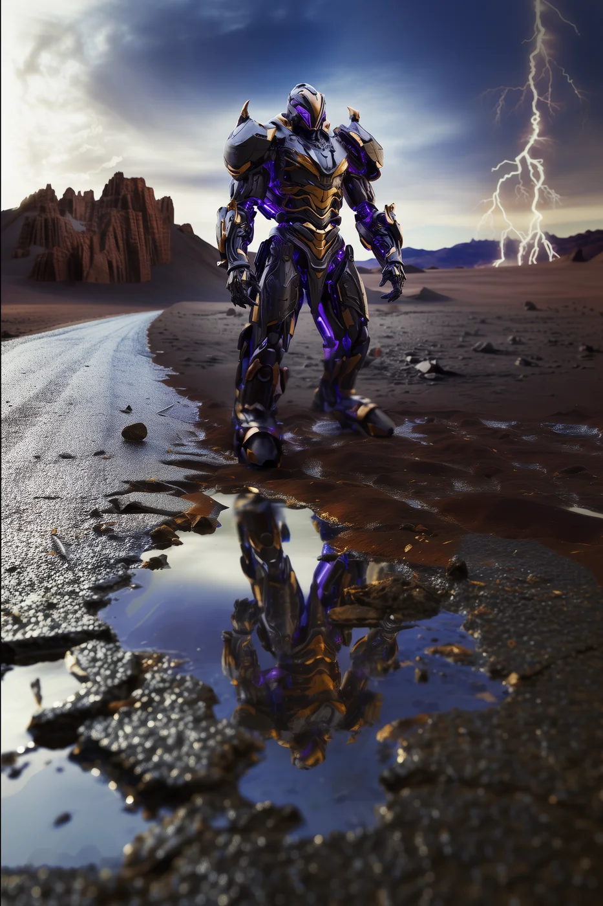
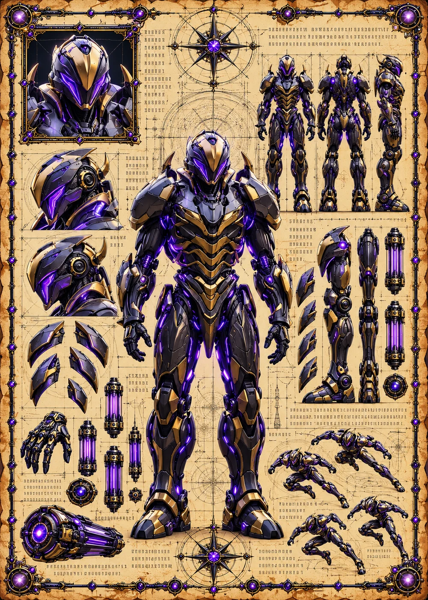

©
©
GENEZYS ARCHIVE · Earth 1 · Legionnaire
Moreno
Anomaly Shifter

Archive record
Moreno sets traps in causality itself. The Feedback Spiral waits for the next enemy who uses a special against Moreno, and sends the consequence straight back. Every door has a keeper, the Custodians say, and Moreno is the lock.
Combat signature
Feedback Spiral
140 Cosmara
260 Animus
280 Vitalis
Creates recursive causality trap: The next time enemy uses special skill against this card, that enemy suffers 150 pierce damage.
Genezys 07:06 ™&©2026LEGIONS
